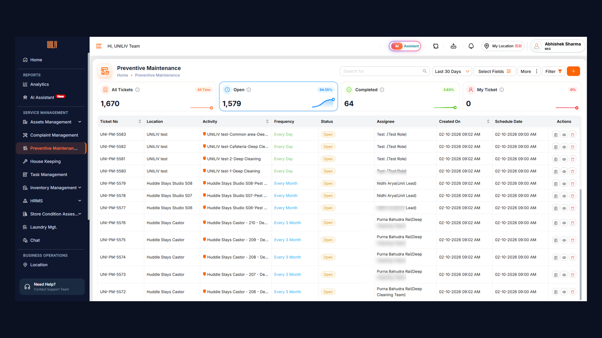

Reactive by default
Each property has electrical assets (geysers, pumps, ACs, panels and servo stabilisers), water tanks, curtains, garden areas and, in some cases, vehicles. All of them need servicing on a schedule. Servicing was tracked, if at all, in vendor notebooks, and residents were usually the first to notice a failure.
Maintenance complaints were the largest complaint category, and each breakdown cost ₹1,800 on average once emergency call-outs were counted.
Where this module fits: Preventive Maintenance is a separate module that owns five asset and upkeep activities on a cycle: Electrical PM, Electrical Servo PM, Water Tank Cleaning, Curtain Cleaning and Vehicle PM. Daily cleaning, deep cleaning, pest control and horticulture run in Facility Services Management, and property quality is checked independently by the Audit module.
You can't schedule what you can't list
- Breakdowns dominated. They made up 46% of all maintenance complaints.
- No asset list. No property had a complete register, so there was nothing to attach a schedule to.
- Blind to repeats. Tickets weren't linked to assets, so the same geyser could fail three times without anyone noticing.
- Five activities, five trackers. Electrical checks, servo checks, water tank cleaning, curtain cleaning and vehicle servicing each lived in a different notebook or chat, with no proof a technician or vendor actually did the work.
Following technicians and vendors on their rounds
I joined technicians on rounds at 8 properties and analysed 3 months of maintenance tickets.
- 70% of breakdowns came from electrical assets, mainly geysers, water pumps and servo stabilisers.
- Technicians would not fill in long forms on a phone. Anything over 5 fields got skipped.
- Vendors already had service intervals for every asset type. We just weren't recording them.
- Very different jobs, from a servo check to a water tank clean to a vehicle service, shared one shape with a daily housekeeping task: a due date, an assignee, a location and proof. That meant PM could reuse the housekeeping workflow and only change the activity rules.
One engine, many schedules
| Option | For | Against | Call |
|---|---|---|---|
| Buy an off-the-shelf maintenance tool | Feature-rich, quick to start | Cost per seat; no link to our complaint data | Rejected |
| Spreadsheet schedule per property | Zero build cost | Same failure as the notebooks; no proof of work | Rejected |
| A separate tracker for each service type | Tailored to each vendor | Five places to check; no single view of what's overdue | Rejected |
| One PM engine on the same task workflow as housekeeping: QR-tagged assets and locations, a schedule template per activity, evidence rules per activity. Start with electrical assets, then add the rest | Covers 70% of breakdowns within weeks; one overdue view for every service | Partial coverage at first | Chosen |
What we deliberately left out of v1: spare-parts inventory, vendor invoicing, and lifts and DG sets (already under vendor AMCs). They were all requested, but none of them targeted the failures residents actually felt.
Same workflow as housekeeping, five different activities
Every PM job moves through the same states as a housekeeping task. Only the trigger, the frequency and the proof of work depend on the activity:
- AssignedSchedule · complaint · move-out · UL
- In progressAsset / location QR starts timer
- CompletedActivity checklist + photos
- VerifiedUL verifies, rates or reopens
- Next due setCycle restarts
Side paths, as in housekeeping: Failed (reason + photo), Missed (past its SLA) and Reopened (UL rejects, the technician must re-scan the QR).
The five PM activities
| Activity | Covers | Done by | Frequency | Proof of work |
|---|---|---|---|---|
| Electrical PM | Geysers, pumps, ACs, panels | Property technician | Monthly | Asset QR + short checklist + photo |
| Electrical Servo PM | Servo voltage stabilisers | Technician or vendor | Quarterly | Asset QR + voltage reading + photo |
| Water Tank Cleaning | Overhead and underground tanks | Vendor | Every 6 months | Location QR + before and after photos + UL sign-off |
| Curtain Cleaning | Room and common-area curtains | In-house staff or vendor | Quarterly and on move-out | Room QR + checklist + photo |
| Vehicle PM | Property and kitchen vehicles | Service vendor | Monthly or by distance | Vehicle QR + odometer reading + service record + photo |
What's shared with housekeeping, and what's different
| Shared | Different in PM | |
|---|---|---|
| Ticket | One ticket model and the same states | Created from a cycle, a complaint or a move-out, not a daily roster |
| Start | Scan the QR at the location to start the timer | Asset QRs (geyser, servo, tank, vehicle) as well as room and area QRs |
| Close | Can't close without the activity's mandatory evidence | Readings and service records, not just photos |
| Verify | Unit Lead verifies, rates or reopens | Sign-off required for vendor jobs such as water tank cleaning |
| Who | Execution roles see only their own tasks | Many jobs go to vendors, so vendor logins and visit SLAs are needed |
- Asset register: a QR sticker on each asset and location. Scanning it opens the full service history.
- Task sources: each activity's schedule creates tickets on the due date; move-outs trigger curtain cleaning; breakdown complaints attach to the asset and can raise an extra PM job; and Unit Leads can raise on-demand jobs.
- Full record on every job: property, asset or location, assignee, start and end time, duration, photos, checklist, verifier and rating.
- Vendor accountability: vendor jobs such as water tank cleaning and vehicle servicing need a Unit Lead sign-off, and every visit record carries time, photos and readings, so invoices can be checked against work actually done.
- Self-healing schedules: a failed or missed PM job alerts the Unit Lead and stays on the overdue list until it is done, and completing a job sets the next due date automatically.

Who does what
| Role | What they do |
|---|---|
| Technician · vendor | See only assigned jobs; scan, start, complete, log readings, upload photos, mark failed with a reason |
| Unit Lead | Assign and raise on-demand jobs, see live status, verify, rate or reopen, sign off vendor visits |
| Cluster Manager | Multi-property dashboards; approve unscheduled vendor visits; alerts on SLA breaches, missed vendor visits and repeat breakdowns on the same asset |
| Ops Excellence | Configure schedules, checklists and SLAs per activity; vendor scorecards and compliance analytics |
| Admin | Full access, vendor onboarding, QR generation |
Electrical first, then everything else
We tagged 3000 assets across 45 properties in 2 weeks through a tagging drive with the ops team, starting with electrical PM, where most breakdowns came from. Technicians got a 5-minute walkthrough on their first scan. Once on-time completion held above 85% for a month, we added the remaining activities: servo PM, then water tank cleaning, curtain cleaning and vehicle PM with their vendors. Because every activity reuses the housekeeping workflow, each new one needed only a schedule template, a checklist and its evidence rules, not a new build.
What changed after 90 days
| Metric | Before | After |
|---|---|---|
| PM tasks completed on schedule | 52% | 89% |
| Breakdown complaints per property / month | 9.5 | 5.8 |
| Assets with full service history | ~0 | 5000 |
No PM schedule existed before launch, so on-time completion compares the first month after launch with month 4. Breakdown complaints compare the 3 months before tagging with months 2–4 after.
Two things I'd do differently
- QR stickers peeled off in wet areas such as pump rooms and tank access points. Weatherproof tags should have been in the v1 budget.
- On-time completion went up before breakdowns went down. The lag was about 6 weeks, and I should have set that expectation with leadership up front.